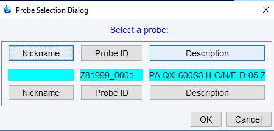

edprosol
NAME
edprosol - Edit probe and solvent dependent parameters
DESCRIPTION
The command edprosol opens a dialog box in which you can set the probe and solvent dependent (Prosol) parameters (see the next figure).
This is typically done during the installation of your spectrometer for all probes and solvents you want to use. However, you can also run edprosol again at a later time to set the Prosol parameters for additional probes and/or solvents.
Setting the Prosol parameters involves the following steps:
- Select the probe, solvent(s) and nucleus by clicking:
- Probe
By default, the current probe (as defined with edprobe) is selected. Prosol parameters must be defined for each probe separately. - To select a probe click on the Select … field: a list of all available probes will be shown.
- 
- Solvent
- The default value is generic. If you keep that value, the same prosol values will be stored for all solvents. If, however, you select a specific solvent, the prosol parameters will be specifically stored for that solvent. If getprosol is executed and prosol parameters exist for the solvent in the dataset then these values are read, otherwise the generic values are read.
- Observe / Decouple
- The combination of the Observe and Decouple nuclei is read from the current dataset. If one wants to set prosol values for a certain nucleus then the nucleus can be selected through the Observe / Decouple drop-down list or by directly clicking on the corresponding nucleus line.
- Observe Comment / Decouple Comment
This step is optional. You can enter two comment lines; for example the conditions under which the pulses/power levels have been determined (filters etc.).
The above figure shows the default layout of the edprosol window (Base View).
The edprosol menu bar offers the following functions:
- File: contains functions for file handling
- Edit: contains two primary functions (amongst others):
Set Default Pulse Widths: resets pulses to the default values.
Set Default Descriptions: resets the descriptions to the default values. - View: allows to toggle between two display modes: Base View and Full View.
Compared to the Base View option the Full View option shows additionally the relations between the prosol parameters and the pulses used in the pulse program. The relations are stored in the assignment file that can be selected in the Pulse Assign File line.
In Full View mode once a pulse assign file has been selected, the icon allows to view the relations between the prosol parameters and the pulses used in the pulse program (column rel). If no pulse assign file has been selected, the icon appears in this column.
In both view modes the icon allows to calculate all power levels of all pulses that correspond to the respective observe or decouple pulse. A dialogue window opens and the user can choose to calculate all pulses of the set or only the calculated pulses:

Calculating all pulses of the set will include also individually calibrated pulses.
View Mode for Power toggles the power levels between Watt and dB.
- Help: provides access to the prosol-related help files.
There are four different tabs to enter the pulses and power levels used in Bruker pulse programs:
- 90 deg. Pulses
Shows the list of 90 deg. observe and decouple pulses. - HR Square Pulses
Shows the list of square pulses (e.g. cpd pulses and roesy and tocsy spinlock pulses). - HR Shaped Pulses
Shows the list of shaped pulses (e.g. selective excitation pulses, selective refocusing pulses, bandselective excitation pulses). - Others
Shows some general pulses and delays that are not nucleus dependent, like the pre-scan delay DE, FILCOR etc.
FILCOR is a correction to the acqt0 value which is used by the baseopt filter. It takes into account that the excitation signals as well as the FID need some time to propagate through the cables and the transmitter or receiver, respectively. This propagation time creates an inevitable delay between the excitation and the receiving of the FID. In contrast to the value acqt0 which depends solely on the pulse program, FILCOR is a hardware correction value. Typical values are in the order of 1 μsec or less. - The buttons on the bottom of the edprosol window provide functionality to save, print and copy the prosol parameters.
- To the left of the Save button, you will find the following buttons:
- Last Save
- Resets the prosol parameters to the last backup.
- Print the currently selected prosol parameters.
- Copy to Probe
- Open a list of all probes. You can select the probe(s) for which you want to store the prosol parameters.
- Copy to Solvent
- Open a list of all solvents. You can select the solvent(s) for which you want to store the prosol parameters and then click Save to store it.
The edprosol window allows you to set up a probe dependent tune file. You can do that by clicking Edit | Edit tunefile. Probe dependent tune files are read by the command tune .sx.
The prosol parameters are interpreted by the getprosol command that copies them to the corresponding acquisition parameters. The relations between prosol and the pulses used in the pulse program are listed in the relation files (pulse assign files). If the pulse program refers to a specific relations file (pulse assign file) it will be interpreted. If no relations file is specified in the pulse program the default relations file will be interpreted.
Note that getprosol is automatically performed as part of the IconNMR automation.
Note that the probe and solvent dependent lock parameters are set with edlock.
INPUT FILES
- <tshome>/exp/stan/nmr/lists/group/
- example - example tune file (input for first File | Edit tunefile)
- <tshome>/prog/tcl/xwish3_scripts
- edprosol - Tcl/Tk script that is started by edprosol
- <tshome>/prog/tcl/libtix/prosol/lib/lists
- routing - default spectrometer routing
INPUT AND OUTPUT FILES
If you select Solvent(s) All:
- <tshome>/conf/instr/<instrum>/prosol/<probeID>/
- nucleus.channel.amplifier - standard prosol parameters
- params - global (channel independent) prosol parameters
- tunefile - probe dependent tune file (input for File | Edit tunefile)
If you select a specific solvent:
- <tshome>/conf/instr/<instrum>/prosol/<probeID>/<solvent>
- nucleus.channel.amplifier - standard prosol parameters
- params - global (channel independent) prosol parameters
- tunefile - probe dependent tune file (input for File | Edit tunefile)
SEE ALSO